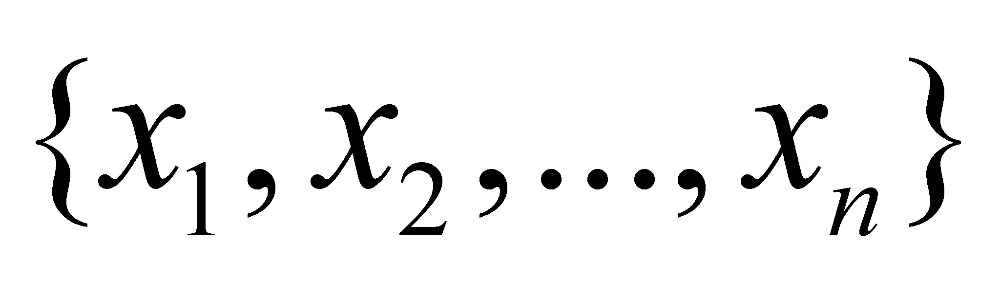
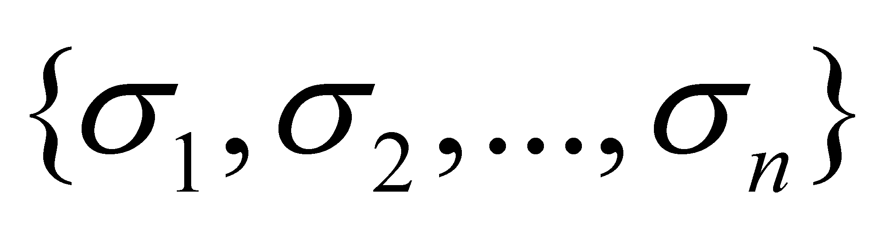
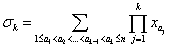
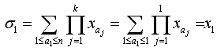
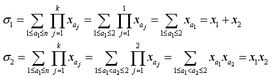
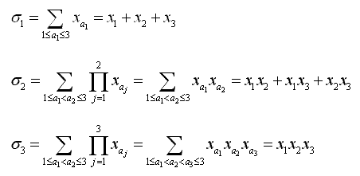
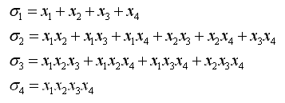
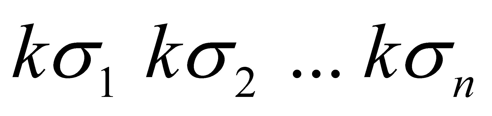
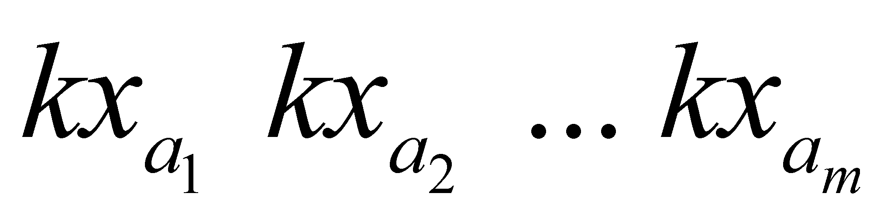
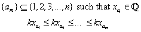

Mathemagicland
Input: standard input
Output: standard
output
Time Limit: 1 second
Jack has been abducted by a man in black suit to Mathemagicland. Fortunately, he met a friend Donald Duck. Donald Duck will help him escape only if he first finds all n-tuple solutions:

after
Donald Duck gives Jack n rational values

where

    Input
There are less than 1001 test cases.
For each test case, the first line contains two integers n and
k, n>0, |k|>0,
n<101, |k|<1001.
The second line contains n integers
separated by a single space,
 After
the last test case, a single integer of 0 is given. Each
n-tuple solution should be outputted in exactly one line and in the
form of:
 Such
that
 Two
n-tuple solutions are said to be the same if they have the same
output. Two solutions are said to be distinct if they are not the
same. Output all distinct solutions in lexicographical order, one in
each line. If there is no solution
(ie there are no rational elements in any of the valid n-tuples x1,x2,...,xn)
, output “No solution.”
without quotes. Print a blank line between each test case.
Note: All inputs/outputs will fit into a standard 32-bit signed integer. Sample
Input 2 1 2 1 0
Problem
setter: Yin Zhao (aka Bugz Podder)
"~~
A man in a black suit will come and take you away at 1:42...and you
will be abducted to Mathemagicland (where you will meet Donald Duck).
~~"
are
called the elementary symmetric polynomials.
For
example: if n=1, then
If
n=2, then
If
n=3, then
If
n=4, then
However,
since most irrational numbers are impossible to represent exactly using a computer, you are only required to output the rational components of in numerical order.
Output
Sample
Output
1 1